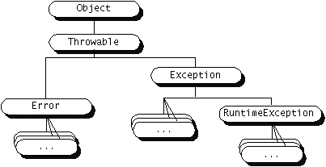

<!DOCTYPE HTML PUBLIC "-//W3C//DTD HTML 3.2//EN">
<html>
<head>
<title>The catch Block(s)</title>
<script language="JavaScript">
<!-- hide
function openWin(term) {
  url="../../information/glossary.html#" + term;
  myWin= window.open(url, "Glossary",
              "width=400,height=150,scrollbars=yes,status=no,toolbar=no,menubar=no");
  myWin.focus();
}
//-->
</script>
</head>
<body BGCOLOR="#ffffff" LINK="#000099">
<B><FONT SIZE="-1">The Java</font><sup><font size="-2">TM</font></sup> <font size="-1">Tutorial</FONT></B>
<br>
<table width="550">
<tr>
<td align="left" valign="center">
<a href="try.html" target="_top"></a>
<a href="../TOC.html#exceptions" target="_top"></a>
<a href="finally.html" target="_top"></a></td>

<td align="center" valign="center">
<font size="-1">
<a href="../../index.html" target="_top">Start of Tutorial</a>
&gt;
<a href="../index.html" target="_top">Start of Trail</a>
&gt;
<a href="index.html" target="_top">Start of Lesson</a>
</font>
</td>

<td align="right" valign="center">
<font size="-1">
<a href="../../search.html" target="_top">Search</a>
<br><a href="../../forms/sendusmail.html">Feedback Form</a>
</font>
</td>

</tr>
</table>

<br>

<font size="-1">
<b>Trail</b>: Essential Java Classes
<br>
<b>Lesson</b>: Handling Errors with Exceptions
</font>

<h2>
The catch Block(s)
</h2>
<blockquote>
As you learned on the <a href="try.html">previous page</a>,
the <code>try</code> statement defines the scope of its
associated exception handlers.
You associate exception handlers with a <code>try</code> statement by
providing one or more <code>catch</code> blocks directly
after the <code>try</code> block:
<blockquote><pre>
try {
    . . . 
} catch ( . . . ) {
    . . . 
} catch ( . . . ) {
    . . . 
} . . . 
</pre></blockquote>
There can be no intervening code between the end of the <code>try</code>
statement and the beginning of the first <code>catch</code> statement.
The general form of Java's <code>catch</code> statement is:
<blockquote><pre>
catch (<em>SomeThrowableObject</em> <em>variableName</em>) {
    <em>Java statements</em>
}
</pre></blockquote>
As you can see, the <code>catch</code> statement requires a single formal
argument. The argument to the <code>catch</code> statement looks like an
argument declaration for a method. The argument type, <em>SomeThrowableObject</em>,
declares the type of exception that the handler can handle and must be the name
of a class that inherits from the
<a target="apidoc" href="http://java.sun.com/products/j2se/1.3/docs/api/java/lang/Throwable.html"><font color="#8800bb"><code>Throwable</code></font></a><a target="apidoc" href="http://java.sun.com/products/j2se/1.3/docs/api/java/lang/Throwable.html"></a> class defined in the
<a target="apidoc" href="http://java.sun.com/products/j2se/1.3/docs/api/java/lang/package-summary.html"><font color="#8800bb"><code>java.lang</code></font></a><a target="apidoc" href="http://java.sun.com/products/j2se/1.3/docs/api/java/lang/package-summary.html"></a> package. When Java programs throw an exception they are really just throwing
an object, and only objects that derive from <code>Throwable</code> can be thrown. You'll
learn more about throwing exceptions in <a href=throwing.html>How to Throw Exceptions</a>.

<p>
<em>variableName</em> is the name by which the handler can refer to the
exception caught by the handler. For example, the exception handlers for
the <code>writeList</code> method (shown later) each call the exception's
<code>getMessage</code> method using the exception's declared name
<code>e</code>:
<blockquote><pre>
e.getMessage()
</pre></blockquote>
You access the instance variables and methods of exceptions in the same manner
that you access the instance variables and methods of other objects.
<code>getMessage</code> is a method provided by the <code>Throwable</code> class
that prints additional information about the error that occurred. 
The <code>Throwable</code> class also implements two methods for filling in and printing
the contents of the execution stack when the exception occurred.
Subclasses of <code>Throwable</code> can add other methods or instance variables.
To find out what methods an exception implements, check its class definition
and definitions for any of its ancestor classes.

<p>
The <code>catch</code> block contains a series of legal Java statements.
These statements are executed if and when the exception handler is invoked.
The runtime system invokes the exception handler when the handler is the
first one in the call stack whose type matches that of the exception thrown.

<p>
The <code>writeList</code> method from the

<a target="source" href="example-1dot1/ListOfNumbersWOHandler.java"><font color="#bb000f"><code>ListOfNumbers</code></font></a><a href="example-1dot1/ListOfNumbersWOHandler.java"></a>
class uses two exception handlers for its <code>try</code> statement, with one
handler for each of the two types of exceptions that can
be thrown within the <code>try</code> block --
<code>ArrayIndexOutOfBoundsException</code>
and <code>IOException</code>.
<blockquote><pre>
try {
    . . . 
} catch (ArrayIndexOutOfBoundsException e) {
    System.err.println("Caught ArrayIndexOutOfBoundsException: " +
		        e.getMessage());
} catch (IOException e) {
    System.err.println("Caught IOException: " +
		        e.getMessage());
}
</pre></blockquote>

</blockquote>

<h3>Catching Multiple Exception Types with One Handler</h3>
<blockquote>
The two exception handlers used by the <code>writeList</code> method
are very specialized. Each handles only one type of exception. The Java
language allows you to write general exception handlers that handle
multiple types of exceptions.
<p>
As you know, Java exceptions are <code>Throwable</code> objects; they are instances
of <code>Throwable</code> or a subclass of <code>Throwable</code>. The Java packages contain
numerous classes that derive from <code>Throwable</code> and thus, build a hierarchy
of <code>Throwable</code> classes.

<p><center></center></p>
Your exception handler can be written to handle any class that inherits
from <code>Throwable</code>. If you write a handler for a "leaf" class (a class with
no subclasses), you've written a specialized handler: it will only handle
exceptions of that specific type. If you write a handler for a "node" class
(a class with subclasses), you've written a general handler: it will handle
any exception whose type is the node class or any of its subclasses.
<p>
Let's modify the <code>writeList</code> method once again. Only this
time, let's write it so that it handles both <code>IOExceptions</code> and <code>ArrayIndexOutOfBoundsExceptions</code>.
The closest common ancester of <code>IOException</code> and <code>ArrayIndexOutOfBoundsException</code>
is the <code>Exception</code> class. An exception handler that handles both
types of exceptions looks like this:
<blockquote><pre>
try {
    . . .
} catch (Exception e) {
    System.err.println("Exception caught: " + e.getMessage());
}
</pre></blockquote>
The <codeException</code> class is pretty high in the <code>Throwable</code> class hierarchy. So in
addition to the <code>IOException</code> and <code>ArrayIndexOutOfBoundsException</code> types that
this exception handler is intended to catch, it will catch numerous
other types. Generally speaking, your exception handlers should be more
specialized. Handlers that can catch most or all exceptions
are typically useless for error recovery because the handler has to determine
what type of exception occurred anyway to determine the best recovery
strategy. Also, exception handlers that are too general can make code
<em>more</em> error prone by catching and handling exceptions that weren't
anticipated by the programmer and for which the handler was not intended.


</blockquote>


<br>
<table width="550">
<tr>
<td align="left" valign="center">
<a href="try.html" target="_top"></a>
<a href="../TOC.html#exceptions" target="_top"></a>
<a href="finally.html" target="_top"></a></td>

<td align="center" valign="center">
<font size="-1">
<a href="../../index.html" target="_top">Start of Tutorial</a>
&gt;
<a href="../index.html" target="_top">Start of Trail</a>
&gt;
<a href="index.html" target="_top">Start of Lesson</a>
</font>
</td>

<td align="right" valign="center">
<font size="-1">
<a href="../../search.html" target="_top">Search</a>
<br><a href="../../forms/sendusmail.html">Feedback Form</a>
</font>
</td>

</tr>
</table>
</body>
</html>
